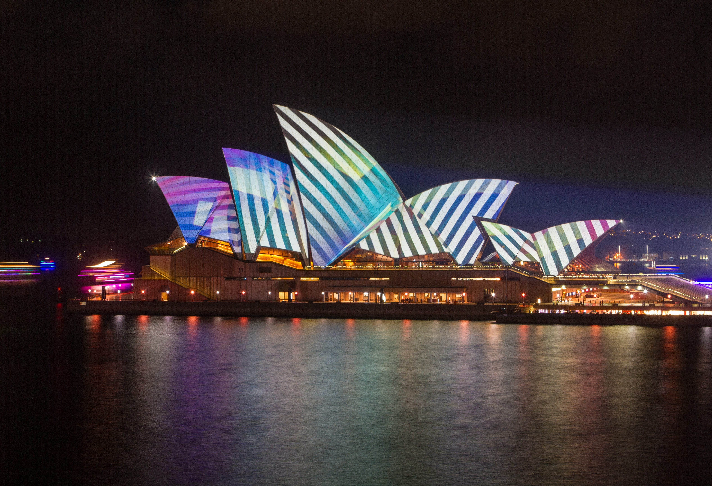

Sydney is one of the most iconic cities in the world. There are many icons to visit such as the Opera house
and the Sydney Habour bridge. During the 7 days tour, we will begin our amazing city Walking Tour, then we
will visit Circular Quay and many other places. Of course, shopping is included. At night we will bring the
group to the best dinner restaurant in the city before bringing you back to the hotel. Please register your
name to know more about the rest of the week’s itinerary.

The city of “golden” beaches. This tour is fantastic for those who love beaches, theme parks, and sunshine.
On one of the days, your group will experience the fantastic theme parks Australia can offer. We will take
you to Warner Bros Movie World and with our VIP pass included, you get priority for all rides. We will be at
the park until sundown and enjoy the firework specially prepared for our tour group. Want to know more?
Please register your name to know more about the week’s itinerary.

If you decided on the Melbourne tour, you would enjoy the scenery and cultural beauty of the place. On one
of the 7 days, we will go to the Great Ocean Road and feel the coastal drive and end up at the 12 apostles.
Along the ride, we will stop at cultural shops and coastal towns. By the time, you get back….you will be so
tired. Want to know more? Please register your name to know more about the week’s itinerary.